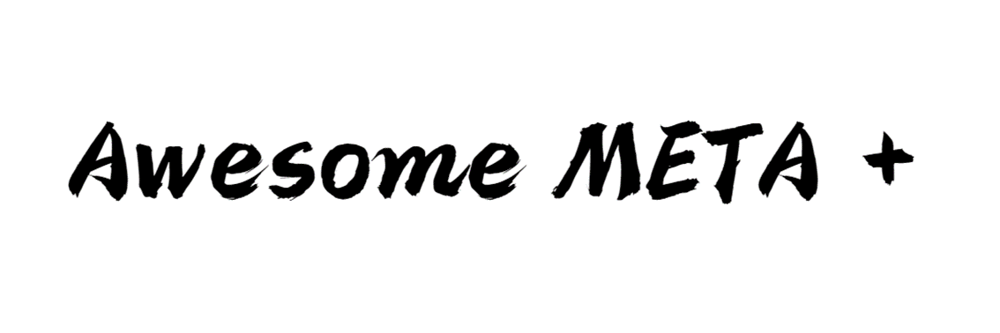

Home


Written: @Jingyao Wang (UCAS)
Awesome-META+ is a software for meta-learning research and practice.
Awesome-META+ builds on top of PyTorch and Tensorflow to accelerate three aspects of the meta-learning research cycle:
- Convenient Learning, complete learning materials are provided for meta learning researchers and newbies
- Fast prototyping, essential in letting researchers quickly try new ideas
- Correct reproducibility, ensuring that these ideas are evaluated fairly
Awesome-META+ provides multiple meta-learning frameworks, extensive application cases, standardized code modules, comprehensive performance testing, online deployment, etc. to create new algorithms and domains, as well as high-quality implementations of existing algorithms and standardized benchmarks.
The basic services and information provided by this platform are as follows.
We will upload our whitepaper and more details very soon.
Overview
- Tutorials: Usage of Awesome META+ and various settings for framework deployment
- Documentation: Models, datasets, benchmarks, optimizers, and standardization
- Examples: Framework deployment and application in Computer Vision, Reinforcement Learning, and Optimization
- Papers: Materials for research and learning, including papers, blogs, books, libraries, lecture videos etc.
- Datasets: Benchmarks of Meta Learning, and performance evaluation on these datasets
- Community: Developers of this platform, and research institutions that do well in meta-learning
- Changelog: Version update and maintenance log of Awesome META+
- GitHub: Code link GitHub
Installation
The services provided by this platform will be able to be installed in the form of python libraries through pip after January 10, 2023.
pip install Awesome-META
Framework List
| Computer Vision | Reinforcement Learning | Optimization | Online | |
|---|---|---|---|---|
| MAML | ✅ | ✅ | ✅ | ✅ |
| MetaOptNet | ✅ | ✅ | ||
| Reptile | ✅ | ✅ | ||
| Prototypical Network | ✅ | ✅ | ✅ | |
| Relation Network | ✅ | ✅ | ✅ | |
| ANIL | ✅ | ✅ | ||
| Meta-SGD | ✅ | |||
| Meta Dropout | ✅ | |||
| MT-net | ✅ | |||
| ES-MAML | ✅ | ✅ | ||
| CNAP | ✅ | |||
| SNAIL | ✅ |
Results
CV
| Method | Avg rank | ILSVRC (test) | Omniglot | Aircraft | Birds | Textures | QuickDraw | Fungi | VGG Flower | Traffic signs | MSCOCO |
|---|---|---|---|---|---|---|---|---|---|---|---|
| k-NN | 13.6 | 41.03±1.01 (14) | 37.07±1.15 (15) | 46.81±0.89 (14) | 50.13±1.00 (14.5) | 66.36±0.75 (12) | 32.06±1.08 (15) | 36.16±1.02 (12) | 83.10±0.68 (11) | 44.59±1.19 (14) | 30.38±0.99 (14.5) |
| Finetune | 9.45 | 45.78±1.10 (12) | 60.85±1.58 (10.5) | 68.69±1.26 (4) | 57.31±1.26 (13) | 69.05±0.90 (8.5) | 42.60±1.17 (12.5) | 38.20±1.02 (10) | 85.51±0.68 (8) | 66.79±1.31 (4) | 34.86±0.97 (12) |
| Prototypical Network | 9.75 | 50.50±1.08 (9.5) | 59.98±1.35 (10.5) | 53.10±1.00 (9.5) | 68.79±1.01 (7.5) | 66.56±0.83 (12) | 48.96±1.08 (10) | 39.71±1.11 (8) | 85.27±0.77 (8) | 47.12±1.10 (13) | 41.00±1.10 (9.5) |
| MAML | 11.25 | 45.51±1.11 (12) | 55.55±1.54 (12) | 56.24±1.11 (7.5) | 63.61±1.06 (11.5) | 68.04±0.81 (8.5) | 43.96±1.29 (12.5) | 32.10±1.10 (14) | 81.74±0.83 (13) | 50.93±1.51 (9.5) | 35.30±1.23 (12) |
| Relation Network | 14.55 | 34.69±1.01 (15) | 45.35±1.36 (14) | 40.73±0.83 (15) | 49.51±1.05 (14.5) | 52.97±0.69 (15) | 43.30±1.08 (12.5) | 30.55±1.04 (15) | 68.76±0.83 (15) | 33.67±1.05 (15) | 29.15±1.01 (14.5) |
| CNAP | 7.75 | 54.80±1.20 (5) | 62.00±1.30 (7.5) | 49.20±0.90 (12) | 66.50±1.00 (9.5) | 71.60±0.70 (4.5) | 56.60±1.00 (6) | 37.50±1.20 (10) | 82.10±0.90 (11) | 63.10±1.10 (5.5) | 45.80±1.00 (6.5) |
RL
cite from GitHub


Changelog
A human-readable changelog is available in the Changelog file.
Citation
Comming soon......
Send Us Feedback!
Our library is open source for research purposes, and we want to improve it! So let us know (create a new GitHub issue or pull request, email us, etc.) if you...
- Find/fix any bug (in functionality or speed) or know how to speed up or improve any part of Awesome META+.
- Want to add/show some cool functionality/demo/project made on top of Awesome META+. We can add your project link to our Community-based Projects section or even integrate it with Awesome META+!
Acknowledgements & Friends
- Learn2learn is similar library, provides standardized samples and focuses on the simple form of building a meta-learning framework
- higher is a PyTorch library that enables differentiating through optimization inner-loops. While they monkey-patch
nn.Moduleto be stateless, learn2learn retains the stateful PyTorch look-and-feel. For more information, refer to their ArXiv paper. - We are thankful to the following open-source implementations which helped guide the design of Awesome META+:
- learnables's learn2learn
- Tristan Deleu's pytorch-maml-rl
- Maracver's Relation-Networks
- Kwonjoon Lee's MetaOptNet
License
Awesome META+ is freely available for free non-commercial use, and may be redistributed under these conditions.